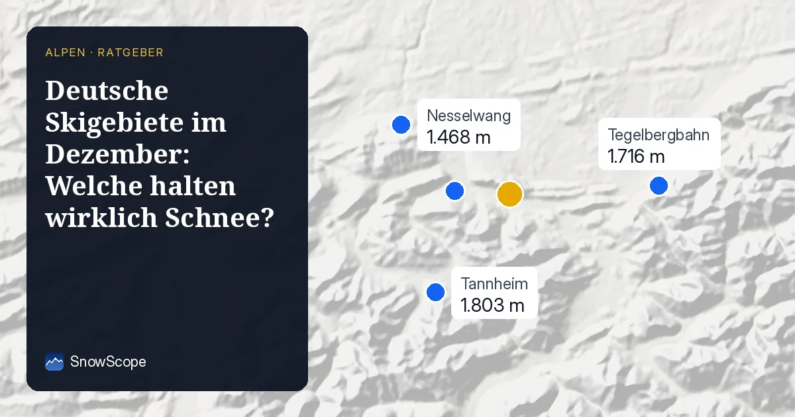
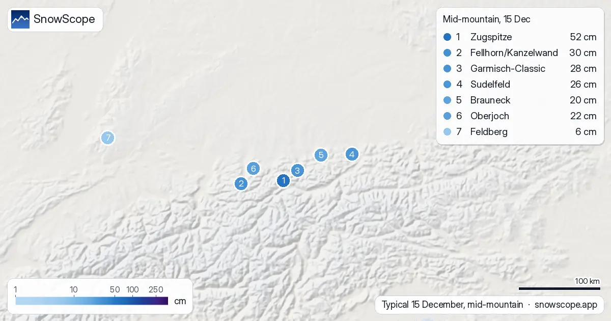

Deutsche Skigebiete im Dezember: Welche halten wirklich Schnee?
Die Kernzahl zuerst: Von den sieben deutschen Skigebieten, die wir verglichen haben, hatten nur der Zugspitzgletscher und das obere Fellhorn in der Woche vom 15. bis 21. Dezember in mindestens 9 von 10 unserer 46 Winter 30 cm oder mehr. Die günstigeren Tageskarten der bayerischen Voralpen kommen mit viel schlechteren Chancen.
Die Live-Schneeprognose für German ski areas in December in der SnowScope-AppSchneehöhen, Pulverschnee-Alarme und 3D-Karte, gratis.
Die Rangliste nach Dezemberschnee
Wir haben den Anteil der Winter mit mindestens 30 cm in der Woche vom 15. bis 21. Dezember betrachtet, an der Mittelstation und am Gipfel. Die Zugspitze (1) führt: 100 % am Gipfel auf 2627 m und 89 % an der Mittelstation. Es folgt Fellhorn/Kanzelwand über Oberstdorf (2) mit 93 % am Gipfel auf 1965 m, aber 59 % an der Mittelstation. Die Garmisch-Classic (3) hat 89 % oben und 48 % in der Mitte.
Dann der Absturz: Sudelfeld (4) 59 % oben und 39 % in der Mitte, Brauneck (5) 57 % und 28 %, Oberjoch (6) 59 % und 28 %. Der Feldberg im Schwarzwald (7) ist Letzter, mit 24 % am Gipfel und 17 % in der Mitte.

Was der Tag kostet
Laut offiziellen Listen 2026-27 kostet die Tageskarte an der Zugspitze online 70,50 EUR, an der Garmisch-Classic online 69 EUR und am Fellhorn/Kanzelwand 72,90 EUR. Sudelfeld, Brauneck und Oberjoch verlangen jeweils 55 EUR. Der Feldberg verkauft seine Tageskarten mit vollständig dynamischen Preisen, daher nennen wir keinen.
Für längere Aufenthalte verkaufen die Oberstdorfer Bahnen 6 Tage für 344,50 EUR im Advent (bis 20. Dezember), Oberjoch für 278 EUR. Sudelfeld und Brauneck teilen sich eine Mehrtageskarte für 208 EUR mit 4 Skitagen innerhalb von 6. Zugspitze und Garmisch-Classic bieten keinen 6-Tage-Skipass an.
Die ehrlichen Verlierer
Die tiefen Gebiete sind keine schlechten Skigebiete – sie sind schlechte Dezemberwetten. Die Talstation am Brauneck (715 m) hat an einem typischen 15. Dezember 9 cm, die am Sudelfeld (865 m) 15 cm, und in den jüngeren Weihnachtswochen erreichte keine der beiden Talstationen in einem einzigen Winter 30 cm. Der Feldberggipfel auf 1446 m hat an einem typischen 15. Dezember 8 cm.
Mit einer Tageskarte für 55 EUR und einer Stunde Fahrt ab München lohnen sich diese Berge nur an Tagen direkt nach einem Schneesturm. Vor der Abfahrt Schneekarte und die eigenen Berichte der Gebiete prüfen.
Schnee pro Euro
Pro Euro ist die Zugspitze im Dezember klar vorn: fast derselbe Preis wie die anderen für Schnee, der jedes Jahr da ist. Die beste Woche bietet Fellhorn/Kanzelwand, dank Adventpreis und eines Skipasses für Oberstdorf und das Kleinwalsertal. Für einen günstigen Tag: auf Schnee warten und Sudelfeld oder Oberjoch wählen.
Tipps für Skifahrer
- Ein Tag im Dezember: die Zugspitze online buchen; das Platt hatte bis Mitte Dezember in jedem unserer Winter 30 cm.
- Eine Woche im Dezember: Oberstdorf mit dem 6-Tage-Skipass im Advent, oben am Fellhorn und an der Kanzelwand fahren.
- Tiefe bayerische Hügel und Schwarzwald: nur nach Neuschnee fahren und am Vortag entscheiden.
- Vor dem Verlassen der Piste den Lawinenlagebericht Bayern lesen, besonders auf dem Zugspitzplatt.
Quellen und Nachweise
- Zugspitze: official lift-pass prices (2026-27), checked 13 November 2026 zugspitze.de/prices
- Fellhorn/Kanzelwand: official lift-pass prices (2026-27), checked 13 November 2026 www.ok-bergbahnen.com/en/preisinformationen/preise-tagesskipass-oberstdorf-kleinwalsertal.html
- Garmisch-Classic: official lift-pass prices (2026-27), checked 13 November 2026 zugspitze.de/prices
- Sudelfeld: official lift-pass prices (2026-27), checked 13 November 2026 www.sudelfeld.de/tagesskipaesse/
- Brauneck: official lift-pass prices (2026-27), checked 13 November 2026 www.brauneck-bergbahn.de/en/day-and-hour-ski-passes.html
- Oberjoch: official lift-pass prices (2026-27), checked 13 November 2026 www.bergbahnen-hindelang-oberjoch.de/preise/
- Feldberg: official lift-pass prices (2026-27), checked 13 November 2026 www.feldberg-erlebnis.de/winter/tickets-preise
Zu diesen Zahlen
Schneewerte: SnowScope-Schneehistorie, 46 vergangene Winter (1980-81 bis 2025-26) auf den Höhen des Skigebiets, höhenkorrigiert (eine Schätzung für eine Fläche, keine Meldungen des Skigebiets); „guter Schnee“ = im Wochenmittel 30 cm oder mehr am Boden. Karte: unsere übliche Schneehöhe am 15. Dezember, nach Höhe auf das Gelände verteilt. Pisten und Lifte: OpenSkiMap-Kartierung. Skipasspreise: offizielle Preislisten der Skigebiete, geprüft am 13. November 2026; Preise können sich ändern.
Diesen Bericht zitieren
Für Forschung, Lehre oder Presse: Zahlen und Grafiken sind unter CC BY 4.0 mit dieser Quellenangabe frei nutzbar.
SnowScope (2026), Deutsche Skigebiete im Dezember: Welche halten wirklich Schnee?, https://snowscope.app/blog/de/2026/11/germany-ski-areas-december-which-hold-snow.html, abgerufen am 2026-11-14
SnowScope (Atlas Labs). (2026, November 14). Deutsche Skigebiete im Dezember: Welche halten wirklich Schnee?. SnowScope snow reports. https://snowscope.app/blog/de/2026/11/germany-ski-areas-december-which-hold-snow.html
BibTeX
@misc{snowscope2026germanyskiareasdecemberw,
author = {{SnowScope (Atlas Labs)}},
title = {Deutsche Skigebiete im Dezember: Welche halten wirklich Schnee?},
year = {2026},
month = nov,
howpublished = {\url{https://snowscope.app/blog/de/2026/11/germany-ski-areas-december-which-hold-snow.html}},
note = {Published 2026-11-14 14:24 UTC; accessed 2026-11-14}
}· CC BY 4.0 · Methoden, Daten und Werkzeuge →
German ski areas in December folgen
Gratis: eine Nachricht, wenn Neuschnee kommt, und jeden Morgen die Vorhersage.
Weitere Schneeberichte

Pila oberhalb von Aosta bietet einen günstigen Tagesskipass für 60,00 EUR und zuverlässigen Schnee im Dezember auf den oberen Pisten.

Montgenèvre hat im Dezember üblicherweise 56 cm Schnee an der Talstation und bietet Wochenendfahrern damit eine bessere Schneelage als Sestriere auf der anderen Seite der Grenze.

Zehn praktische Punkte für eine Skireise nach Livigno: Anreise, Kälte, zollfreie Geschäfte, die zwei Talseiten und die beste Schneezeit, aus 46 vergangenen Wintern unserer Schneehistorie.